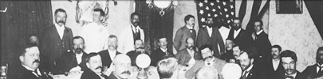
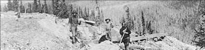

Black people have lived in Canada since it was first settled by Europeans. In 1782 British General Guy Carleton granted freedom certificates and passage to Canada for 3,000 slaves who had fought with the British in the American War of Independence. By 1835 the British Parliament had abolished slavery in Canada and its other colonies. For another 30 years most of the Black people who came to Canada were fleeing slavery in the United States. With the end of slavery in 1865 many Black Americans went back to the U.S., but some moved to Canada in the late 19th century to escape legal and social inequalities. The American South was still mostly poor and rural, Blacks and Whites were strictly segregated, and racial violence was widespread. Canada did not have an entrenched system of discriminatory Jim Crow laws as the U.S. then did, although racial segregation and discrimination was practised in many places.
By 1901 there were 17,437 Black people in Canada. In the Yukon, the frenzy of the Klondike Gold Rush had increased the population to nearly 30,000, including 99 Black people. The Klondike Gold Rush provided the promise of new opportunities, with fewer restrictions on the kinds of work or business ventures available to people, regardless of their race, ethnic background or economic or social status. Black people worked as household servants, barbers, waiters, musicians, entrepreneurs, labourers and gold miners.

“J.H. Woolfork, a colored miner, is the owner of a bench claim opposite No. 44, which he is industriously working, taking out good pay.”
(Above)
This man, a prizefighter nicknamed the Black Prince, and the dog Banko, were the “mascots” of the Monte Carlo saloon, Dawson City, circa 1899.
Yukon Archives, Clayton Betts collection, #9431
Miners at 32 Below, Hunker Creek, circa 1900. The Black man appears to be a cook.
Yukon Archives, Adams and Larkin fonds, #9106

Yukon Archives, University of Washington Photograph collection, #1346
A Black servant at a banquet given by the U.S. Consul, July 4, 1899.
Courtesy British Columbia Archives, # C-04980
Click here to view the British Columbia Archives website
and their description of this photo.
Obituary: Klondike Nugget, May 16, 1901

Sam Agee (front, left) and the other members of Renzoni’s championship hockey team, 1910.
Yukon Archives, Dawson City Museum collection, #6402

Sam Agee poses with Joe and Otto.
Yukon Archives, Emil Forrest fonds, 80/60 #499

Grave of Sam’s brother, Roy.
Yukon Archives, Black History collection, 2005/162 #1
Three miners beside a flume, Hunker Creek, 1899.
Courtesy of University of Washington Libraries, Special Collection UW 22083
(Above Left)
Yukon Archives, GOV 418, #37918